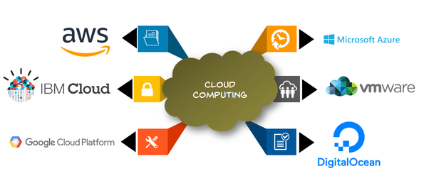
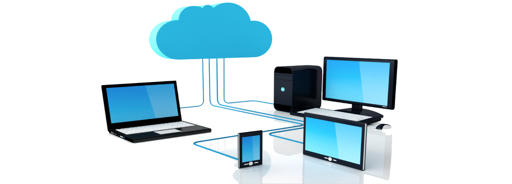

Everything about Computing Platforms
Computing Platform
A Computing Platform is a combination of hardware and software that provides the foundation for running applications or software on a computer or other device. The platform includes a range of components, such as the central processing unit (CPU), memory, storage, input/output devices, operating system, applications, middleware, virtualization software, cloud computing services, and security software.
An example of a computing platform is Microsoft Windows. Windows is an operating system that provides the foundation for running software applications on a computer. It comes with a wide range of hardware and software components that allow applications to access the computer's resources, such as the CPU, memory, storage, and input/output devices.
Windows provides a platform for a wide range of software applications, including productivity software like Microsoft Office, as well as specialized software applications for tasks like video editing, game development, and scientific research. These applications are built on top of the Windows platform and rely on its underlying components to function.
Another example of a computing platform is Apple's macOS. macOS is an operating system that is designed to run on Apple's hardware, including desktops, laptops, and mobile devices. Like Windows, macOS provides a platform for running software applications, and it comes with a range of hardware and software components that enable applications to run.
macOS provides a platform for a wide range of software applications, including productivity software like Apple's iWork suite, as well as specialized software applications for tasks like audio and video editing, software development, and graphic design. These applications are built on top of the macOS platform and rely on its underlying components to function.
Computing platforms are critical to enabling software applications to run on a computer, and there are a wide range of examples, including Microsoft Windows, Apple macOS, various flavors of Linux, and mobile operating systems like Android and iOS.
The most common computing platforms are desktops and laptops running operating systems such as Microsoft Windows, Apple macOS, and various flavors of Linux. These platforms come with a wide range of hardware specifications, which can include different types of processors, memory, storage, and graphics cards.
In addition to desktops and laptops, there are also mobile computing platforms, such as smartphones and tablets, that run on operating systems like Android and iOS. These devices typically have less powerful hardware than desktops and laptops, but they are designed to be portable and easy to use on the go.
Cloud computing platforms are another type of computing platform that has become increasingly popular in recent years. These platforms enable users to access computing resources, such as processing power and storage, over the internet. Cloud computing platforms can be used for a variety of applications, such as hosting websites and running virtual machines.
Finally, there are also specialized computing platforms for specific applications, such as gaming consoles, smart TVs, and Internet of Things (IoT) devices. These platforms are designed with specific hardware and software requirements in mind and are optimized for their particular use case.
Computing platforms play a critical role in enabling users to run applications and perform tasks on their devices, whether they are desktops, laptops, mobile devices, or specialized hardware.
Computing platforms consist of several key components, including:
- Hardware - This includes the physical components of a computing platform, such as the central processing unit (CPU), memory, storage, and input/output devices. These hardware components provide the processing power, memory, and storage capacity required to run applications and software.
- Operating System (OS) - The operating system is a software component that manages and controls the computer's hardware and provides the foundation for running applications and software. Examples of operating systems include Microsoft Windows, macOS, Linux, Android, and iOS.
- Applications - Applications are software programs that are designed to run on a specific computing platform. Applications can include productivity software, entertainment software, and specialized software for tasks like data analysis and scientific research.
- Middleware - Middleware is software that provides an interface between different applications or software components. It enables applications to communicate with each other and share data, even if they are running on different computing platforms or operating systems.
- Virtualization software - Virtualization software provides the capability to create virtual machines, which are simulated computing environments that can run on a physical computing platform. Virtualization software enables users to run multiple operating systems or applications on a single physical computing platform, improving resource utilization and flexibility.
- Cloud computing services - Cloud computing services provide computing resources, such as processing power, memory, and storage, over the internet. Cloud computing platforms enable users to scale computing resources up or down as needed, and pay only for the resources they actually use.
- Security software - Security software provides protection against threats to the computing platform, such as viruses, malware, and unauthorized access. Security software includes features such as firewalls, antivirus software, and intrusion detection systems.
These components work together to provide the foundation for running applications and software on a computing platform, and they are essential for enabling users to work, communicate, and access information on their computers and other devices.
There are many computing platforms available for various purposes, here are a few examples:
-
 Operating system platforms
Operating system platforms
Examples include Microsoft Windows, MacOS, and Linux. These platforms provide the fundamental software infrastructure for running software applications on computers and mobile devices. - Mobile platforms
Examples include Android and iOS, which provide the foundation for running software applications on mobile devices such as smartphones and tablets. - Cloud computing platforms
Examples include Amazon Web Services (AWS), Microsoft Azure, and Google Cloud Platform (GCP), which provide a wide range of infrastructure services for building, deploying, and managing software applications and services in the cloud. - Virtualization platforms
Examples include VMware and Oracle VirtualBox, which provide the capability to run multiple virtual machines on a single physical machine, enabling users to run multiple operating systems and applications on a single device. - Gaming platforms
Examples include Microsoft Xbox, Sony PlayStation, and Nintendo Switch, which provide the hardware and software infrastructure for running video games on dedicated gaming consoles.  Social media platforms
Social media platforms
Examples include Facebook, Twitter, and Instagram, which provide the infrastructure and services for users to share and communicate with one another through social media.
These are just a few examples of the many computing platforms that are available, and they illustrate the wide range of capabilities and purposes that computing platforms can serve.
Cloud Computing Platform

Cloud computing refers to the delivery of computing services over the internet, allowing users to access computing resources such as servers, storage, databases, and software applications, without having to own and manage their own physical infrastructure. Cloud computing enables organizations to scale up or down computing resources as needed, reducing the need for large up-front capital expenditures on hardware and infrastructure, and improving overall flexibility and agility.
There are several types of cloud computing services, including:
- Infrastructure as a Service (IaaS): IaaS provides access to computing infrastructure such as virtual machines, storage, and networking resources, which users can manage and control as needed.
- Platform as a Service (PaaS): PaaS provides a complete platform for developing, testing, and deploying software applications, without the need for users to manage the underlying infrastructure.
- Software as a Service (SaaS): SaaS provides access to software applications over the internet, without the need for users to install or maintain the software on their own devices.
Cloud computing also provides several benefits for organizations, including:
- Scalability: Cloud computing enables organizations to scale up or down computing resources as needed, improving overall efficiency and reducing costs.
- Flexibility: Cloud computing allows users to access computing resources from anywhere with an internet connection, improving overall flexibility and agility.
- Cost savings: Cloud computing reduces the need for large up-front capital expenditures on hardware and infrastructure, allowing organizations to reduce overall costs.
- Improved security: Cloud computing providers typically offer robust security measures to protect users' data and infrastructure.
- Simplified management: Cloud computing providers typically handle many of the routine management tasks associated with computing infrastructure, freeing up IT staff to focus on more strategic tasks.
Cloud computing is a popular and rapidly growing computing model that provides organizations with access to powerful computing resources and improves overall efficiency and flexibility.
There are many examples of cloud computing services and platforms available, including:
- Amazon Web Services (AWS): AWS is a cloud computing platform that provides a wide range of infrastructure services, including computing, storage, and databases. AWS is widely used by organizations of all sizes and provides a flexible and scalable platform for building and deploying applications.
- Microsoft Azure: Microsoft Azure is a cloud computing platform that provides a wide range of services for building, deploying, and managing applications and services. Azure supports a wide range of programming languages and provides a flexible and scalable platform for organizations of all sizes.
- Google Cloud Platform (GCP): GCP is a cloud computing platform that provides a wide range of services for building, deploying, and managing applications and services. GCP provides a powerful and scalable platform for data analysis, machine learning, and other advanced computing tasks.
- Salesforce: Salesforce is a cloud-based customer relationship management (CRM) platform that provides a wide range of services for managing customer interactions and data. Salesforce is widely used by businesses of all sizes and provides a flexible and scalable platform for managing customer relationships.
- Dropbox: Dropbox is a cloud-based file storage and sharing platform that provides a simple and convenient way for users to store, share, and access their files from anywhere with an internet connection.
These are just a few examples of the many cloud computing platforms and services available, and they illustrate the wide range of computing services that can be delivered through the cloud.
About
- If you want to learn more, you can search for it in your browser.
- The content of this site is not mine to take credit. I only get information on the internet.